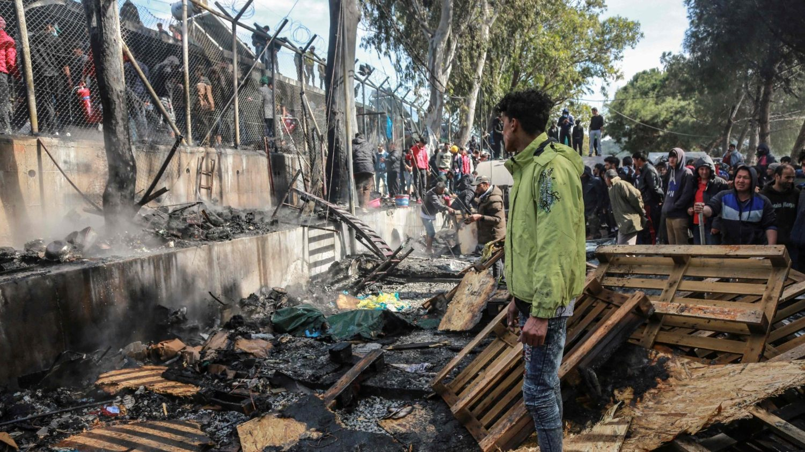

La situazione attuale non è molto differente infatti ci sono ancora moltissime guerre in tutte le parti del mondo, ma soprattutto ci sono
ancora delle strutture simili ai campi di concentramento.Un esempio sono le pesone
che provano a scappare dalla Libia con l'obiettivo di arrivare in europa, vengono bloccati e mandati in campi di attesa
con condizioni disumane. ci sono altri esempi di campi di prigionia come ad esempio i campi di prigionia
in corea del nord per i dissidenti politici oppure anche nella provincia dello Xinjiang, in Cina, dove la minoranza uiguri, un’etnia di religione islamica,
viene torturata, costretta al lavoro forzato, a convertirsi e a bere alcolici.
Altri esempi di campi di concentramento possiamo trovarlia Myanmar, in Malaysia, in Bangladesh, dove vivono i perseguitati Rohingya. . C'erano dei campi
di concentramento anche negli Stati Uniti d’America di Donald Trump. Come quello di Clint, nel Texas,
dove nel 2019 sono stati trattenuti 250 minori non accompagnati in condizioni disumane, costretti a dormire sul pavimento, a lavarsi ogni tre giorni, senza
dentifricio né sapone, senza alcun programma d’istruzione.
|
 Il campo di concentramento è una struttura carceraria all'aperto adatta alla detenzione di civili e militari. Si tratta solitamente
di una struttura provvisoria, adatta a detenere grandi quantità di persone, in genere prigionieri di guerra ma anche dissidenti politici
, destinati a essere scambiati o rilasciati alla fine del conflitto. Nel caso della seconda guerra mondiale furono utilizzati per realizzare
uno sterminio di massa degli ebrei.
Comunemente è formato dalle baracche
o container disposti ordinatamente, contenenti dormitori, refettori, uffici e analoghe
costruzioni necessarie alla reclusione dei prigionieri, e circondate da reticolati di filo spinato o altri tipi di barriere.
Il perimetro del campo è sorvegliato da ronde di guardie armate. Le condizioni dei detenuti nella Seconda Guerra Mondiale in questi campi
erano disumane infatti le razioni di cibo che venivano date ai detenuti erano pochissime, i detenuti dovevano lavorare in condizioni disumane
e se provavano ad opporsi venivano uccisi.L'igene quindi si può intuire che era bassissimo infatti non si potevano fare le docce. I nazisti sfruttarono
proprio questa cosa per attuare il loro sterminio infatti facendo credere ai detenuti che li avrebbero portati a fare una doccia venivano portati nelle camere a gas dove trovavano la morte
Il campo di concentramento è una struttura carceraria all'aperto adatta alla detenzione di civili e militari. Si tratta solitamente
di una struttura provvisoria, adatta a detenere grandi quantità di persone, in genere prigionieri di guerra ma anche dissidenti politici
, destinati a essere scambiati o rilasciati alla fine del conflitto. Nel caso della seconda guerra mondiale furono utilizzati per realizzare
uno sterminio di massa degli ebrei.
Comunemente è formato dalle baracche
o container disposti ordinatamente, contenenti dormitori, refettori, uffici e analoghe
costruzioni necessarie alla reclusione dei prigionieri, e circondate da reticolati di filo spinato o altri tipi di barriere.
Il perimetro del campo è sorvegliato da ronde di guardie armate. Le condizioni dei detenuti nella Seconda Guerra Mondiale in questi campi
erano disumane infatti le razioni di cibo che venivano date ai detenuti erano pochissime, i detenuti dovevano lavorare in condizioni disumane
e se provavano ad opporsi venivano uccisi.L'igene quindi si può intuire che era bassissimo infatti non si potevano fare le docce. I nazisti sfruttarono
proprio questa cosa per attuare il loro sterminio infatti facendo credere ai detenuti che li avrebbero portati a fare una doccia venivano portati nelle camere a gas dove trovavano la morte